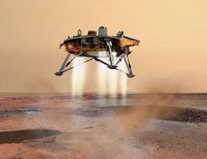
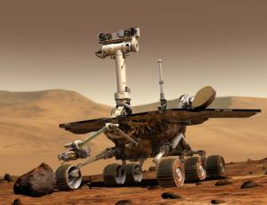
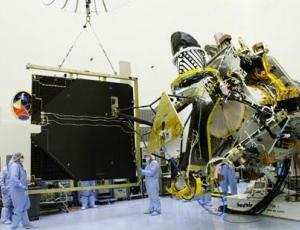
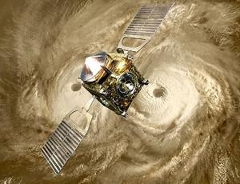

Современная наука и Техника
Основной целью, поставленной в данной публикации, является раскрытие ключевых аспектов и тенденций развития науки и техники, стремление выявить их общие закономерности, скрытые за большим количеством ежедневных событий, новостей и явлений. Благодаря такому емкому изложению, эти публикации могут быть полезны как лицам, интересующимся техническим прогрессом, так и учащимся.
Автоматы и пилотируемые миссии
Космические программы, которые реализуются в настоящее время, четко разделились на две категории – те, которые идут с участием людей, и те, в которых используются роботы. Как правило, первые программы – это полеты на низкие орбиты, в первую очередь, на Международную Космическую Станцию, тогда как вторые – на различные планеты Солнечной системы, вплоть до самых далеких.Почему для полета к планетам и их изучения используются роботы? Одна из причин, о которой уже говорилось в предыдущем разделе – то, что человеческое тело весьма хрупкое. Человек не может существовать без кислорода, пищи и воды; ему необходима защита от вакуума и космического излучения. Все системы жизнеобеспечения многократно увеличивают стартовый вес космического корабля, что приводит к дополнительным финансовым издержкам. В частности, посчитано, что денег, затраченных на запуск одного космонавта, хватило бы на две беспилотные миссии. Кроме того, космонавты должны тратить определенное время на то, чтобы следить за правильной работой всех систем жизнеобеспечения – соответственно, сокращая время на проведение полезной научно-исследовательской работы. В противоположность этому, зонды-роботы не требуют никакой дополнительной поддержки, кроме их питания электроэнергией.
Далее, по мере того, как совершенствуются компьютерные чипы и программное обеспечение к ним, зонды-роботы становятся все более интеллектуальными. Пока, правда, они не превосходят по сообразительности двухлетнего ребенка, однако ученые работают над тем, чтобы делать более разумные системы. Так, например, в октябре 2005 года NASA представило два новых планетохода – Gromit и K-9. Несмотря на то, что они выглядят так же, как и те планетоходы, что сейчас работают на Марсе (Spirit и Opportunity), они имеют намного более развитый интеллект. Снабженные таким интеллектом, камерами и спектрометрами, эти роботы могут сделать за 15 минут то, на что сегодня уходит 3 дня. Управление подобными марсоходами будет выглядеть значительно проще: люди на Земле смогут просто говорить ему: «Езжай к тому камню и опусти на него руку с инструментом». Сейчас же установка этой руки занимает целый день, так как вначале контролеры должны увидеть позицию марсохода, а потом уже давать команду об опускании руки.
|  |  |
|
Специалисты NASA планирует в августе 2006 запустить на Марс аппарат Mars Phoenix.
Сейчас ученые все еще занимаются поиском оптимального места для его приземления.
Phoenix планируют опустить в северном полярном районе.
|
Художественное изображение аппарата MER NASA - Mars Exploration Rover (Исследовательский марсиан-ский ровер)
который в уме художника расположен на Марсе. Два ровера были запущены в 2003 году и прибыли на Марс
в январе 2004 года.
|
|
Показана подготовка аппарата Mars Reconnaissance Orbiter к запуску (идет нелегкий процесс тестиро-вания систем
аппарата). Рабочие с помощью крана стабилизируют одну из солнечных панелей аппарата,
временно удаленную с космического корабля.
|
Художественное изображение аппарата Venus Express и двойного глаза - атмосферного вихря на Венере.
Фактически два огромных атмосферных вихря расположены по полюсам Венеры.
Космический аппарат изучает атмосферу Венеры.
|
|  |  |
Повышение интеллектуальности планетоходов и других космических зондов также приведет и к увеличению скорости обработки собираемой ими научной информации. Зачастую на Землю передаются снимки, не имеющие никакой научной ценности. Все это вызывает лишь снижение темпов работы и дополнительные денежные затраты. Поэтому возникает разумный вопрос: можно ли поручить зонду самому производить первичную обработку получаемых данных, чтобы он сам отбрасывал ненужное? Можно, и уже делаются первые попытки создания такого программного обеспечения. Так, например, в марсианских программах важное место занимает поиск облаков и мини-торнадо, известных как «пылевые дьяволы» (dust devils). Однако такие объекты встречаются редко, поэтому на большинстве снимков просто ничего нет, и их передача на Землю является пустой тратой времени. Ребекка Кастано (Rebecca Castano), сотрудник NASA, говорит, что тесты новой программы показали верность определения облаков в 93% случаев. Более важно здесь то, что программа редко ошибается в обнаружении облака, когда оно действительно есть; но иногда она может сказать о наличии облака, когда его нет – ошибка, которую люди на Земле легко отсеют. Таким образом, роботы-зонды во многом превосходят людей при выполнении космических заданий. Означает ли это безоговорочное окончание любых пилотируемых миссий? Следует ли отсюда, что теперь удел людей – лишь оставаться на Земле и управлять роботами дистанционно? Нет, и на это тоже есть серьезные аргументы.
Одна из главных проблем роботов – «жесткость» их программы. Несмотря на все возможности их перепрограммирования, они все же остаются весьмаограниченными в выполняемых функциях. Иными словами, если по ходу научной программы будут обнаружены какие-то новые данные (а такое случается довольно часто), то робот не сможет провести дополнительную серию экспериментов. Таким образом, для новых исследований должен быть построен новый аппарат, который вновь должен быть доставлен к месту работы, на что должны быть затрачены деньги, и так далее.
В противовес этому, миссии с участием людей всегда являются крайне эффективными. Так, например, оборудование для экспериментов на Луне, настроенное астронавтами Apollo, работало идеально в течение 8 лет – до тех пор, пока его не выключили в 1977 году по финансовым причинам. Роботизированные миссии, даже если бы они несли аналогичные инструменты, были бы невероятно трудны в установке и калибровке. Еще одним примером успешной миссии является обслуживание телескопа Hubble астронавтами, выполненное в 1993 году. Подобные миссии показывают, как люди, в отличие от техники, могут творчески и разносторонне подойти к решению различных задач.
Другое важное отличие человека от любого технического устройства, даже весьма интеллектуального – это наличие интуиции. Человек может решать такие задачи, которые не под силу ни одному современному компьютеру. Если перенести данное утверждение на космические исследования, то окажется, что даже один человек может вести работу намного эффективнее. Опытный специалист сразу будет видеть, какие направления исследований необходимо продолжать, а какие – отбрасывать, причем происходить это будет в режиме «реального времени». В то же время робот будет делать лишь те эксперименты, которые заданы ему центром управления. При этом робот может легко пропустить какие-то важные, но незаметные детали, помогающие составить полную картину исследования (как шутят планетологи, марсоход, запрограммированный на изучение камней, может спокойно проехать мимо кости динозавра, лежащей на поверхности Марса).
Какой же вывод можно сделать из всего сказанного? Видно, что роботы наиболее эффективны при выполнении заданий в тяжелых условиях, где человек просто не может существовать (или может, но относительно недолго). Они хорошо могут выполнять достаточно однообразные задания и задания, где не возникает существенных отклонений от программы действий. В противоположность им, люди являются творческим и нестандартным «элементом» любой космической программы. Космонавты должны работать там, где требуются быстрые и уникальные решения и подходы. Поэтому представляется идеальным своеобразный «синтез» людей и техники – когда каждому из этих двух составляющих отводится именно та роль, где он наиболее эффективен: роботы выполняет тяжелую, трудную, опасную и монотонную работу, тогда как людям отводится управляющая и задающая роль. Например, при освоении планет роботы могут быть «первой волной» колонизации, создавая на месте жилые модули и другие конструкции. Второй же волной освоения уже станут люди, которые прибудут на подготовленную базу, чтобы выполнять там более сложные задачи. Именно такой видят перспективу колонизации Луны.
Освоение космоса: "частный бизнес"
Описанные в предыдущем разделе пилотируемые и беспилотные миссии имеют одну общую черту: все они проводятся государствами. Иначе говоря, всевозможные запуски спутников, ракет, научно-исследовательских зондов и других объектов вплоть до недавнего времени выполнялись только государственными космическими агентствами. К крупнейшим из них можно отнести Российское космическое агентство, Европейское космическое агентство (ESA) и Американское агентство NASA.Такая монополия на запуски ракет была связана с довольно простыми и очевидными причинами – сложностью подготовки и высокой стоимостью ракет. Фактически, над каждым их стартом работает огромная армия конструкторов, инженеров, механиков, контролеров, диспетчеров, сидящих в центре управления полетом, и множество других людей самых разных профессий. Но в таком случае вывод напрашивается сам собой: подобная система дает возможность полета в космос лишь избранным, буквально единицам из многомиллиардного населения Земли. Означает ли это, что мечты всех остальных людей хотя бы ненадолго испытать чувство невесомости и взглянуть в иллюминатор на круглую планету под собой так и останутся навсегда мечтами? Нет, и, возможно, уже в ближайшем будущем ситуация здесь сможет коренным образом поменяться – речь идет о частных космических полетах.
Первой формой этой «новой волны» в деле освоения космоса стал так называемый «космический туризм», организованный американской фирмой Space Adventures. Суть его сводится к тому, что любой, достаточно богатый человек может в прямом смысле слова совершить недолгую туристическую поездку на Международную Космическую Станцию. При этом полет совершается на ракете, запускаемой Российским космическим агентством (между ним и Space Adventures имеется соответствующее соглашение), вместе с официальными космонавтами. Стоимость такого «билета в космос» довольно высока и колеблется в районе $20 млн. К настоящему времени [на момент написания статьи (август 2006) – прим. автора] в космосе уже побывало три космических туриста, и планируется подготовка еще нескольких человек. Возможно, в будущем, помимо просто полета и десятидневного пребывания на МКС, в спектр предоставляемых «услуг» также будет добавлена и прогулка в открытом космосе, о чем сейчас ведутся переговоры.
Как видно, космический туризм стал неким компромиссным решением между государственными запусками и частными инициативами. Благодаря ему, теперь в космос могут полететь не только официальные космонавты, но и другие люди. Однако такой компромисс является и главным недостатком данного начинания. Это связано с тем, что, в конечном итоге, все полеты в космос все равно осуществляются в рамках государственных программ, а это неизбежно накладывает ограничения – как на стоимость полета, так и на количество пассажиров (в настоящее время – лишь один космический турист за один запуск).
Что же нужно сделать для того, чтобы началось действительно массовое освоение космоса? Прежде чем ответить на этот вопрос, нужно вспомнить историю развития вычислительной техники. Несмотря на кажущееся отсутствие какой-либо связи между двумя этими областями, именно прогресс компьютерной техники может стать образцом для создания частной космической индустрии. Как известно, первые компьютеры были огромных размеров, имели сравнительно небольшую производительность и, ввиду большой стоимости, их могли себе позволить лишь крупные компании, государственные учреждения, институты и университеты. Но после того как фирма IBM предложила модульный вариант персональных компьютеров, в этот бизнес пришло множество компаний, которые стали конкурировать между собой. Итогом всего этого стало неуклонное снижение цен и постоянный рост качества и производительности компьютеров.
Можно ли говорить, что и в космической индустрии наблюдается схожая ситуация? Да, аналогия здесь очевидна: в настоящее время, как и на заре компьютерной техники, ракетные запуски дороги, малоэффективны, и их могут позволить себе лишь государственные структуры. Но уже намечается переход на следующую стадию, когда на этот рынок придет множество мелких фирм. Снова начнется активная конкуренция, и, как следствие, через какое-то время стоимость услуг сильно упадет, а освоение космоса станет действительно массовым – аналогично тому, как сейчас компьютеры есть практически в каждом доме.
Примечательным событием в этой области стали соревнования X-prize, проводившиеся в 2004 году, которые как раз и были нацелены на стимулирование конкуренции в области космических запусков. Обещанная награда этих соревнований - $10 миллионов - доставалась той команде разработчиков, космический корабль которой сможет подняться на высоту 100 километров над поверхностью земли, совершить успешное приземление, и в течение двух недель повторить полет. Финансирование этого конкурса осуществлял один из основателей Microsoft миллиардер Пол Ален. Заявки на участие в конкурсе X-prize подали более 20 команд из 7 стран мира, но победителем стал космический корабль SpaceShipOne, разработанный компанией Scaled Composites.
Стимулирование конкуренции в области космических полетов ведут не только отдельные люди, но и организации. Особо следует здесь отметить деятельность Американского агентства по аэронавтике (NASA). Его директор Майкл Гриффин (Michael Griffin) весьма четко определил позицию своей организации в этом вопросе: «Нам бы хотелось, чтобы такие услуги [доставку грузов и людей в космос] можно было просто покупать. Мы надеемся, что как только мы запустим механизм конкуренции, качество и рентабельность предоставляемых услуг заметно вырастет по сравнению с тем, что сейчас предлагает государство». Поставив перед собой такую цель, в настоящее время NASA стало активно заключать контракты с частными фирмами-разработчиками, а также проводить различные соревнования. Одно весьма любопытное мероприятие подобного рода, состоявшееся в 2005 году, заключалось в состязании «космических лифтов», когда по натянутой вертикально ленте должны были подниматься роботы. Подобное соревнование обыгрывает весьма перспективную идею постройки космического лифта, который в будущем, возможно, соединит спутники на орбите с поверхностью Земли.
Помимо компании Space Adventures, упоминавшейся выше, активную деятельность в космических запусках проявляют такие фирмы, как Virgin Galactic, PlanetSpace, SpaceX, Blue Origin и другие. Впечатляет уже один только размах их начинаний, о которых раньше можно было прочитать лишь в фантастических произведениях. Так, Virgin Galactic (руководитель – интернет-предприниматель Ричард Брансон (Richard Branson)) договорилась с властями штата Нью-Мексико о строительстве космодрома. Аналогичное намерение – построить космопорт в штате Техас – есть и у компании Blue Origin, директором которой является основатель сайта Amazon.com, миллиардер Джеф Безос (Jeff Bezos). Еще один миллионер - Элон Маск (Elon Musk), который в свое время создал платежную интернет-систему PayPal, а теперь руководит фирмой SpaceX, планирует проводить частные запуски ракет для вывода спутников в космос (на фото показана готовящаяся к старту ракета Falcon 1 его компании). При этом отмечается, что расценки на такие запуски будет в несколько раз ниже государственных. Компания PlanetSpace разрабатывает ракетоплан, предназначенный для орбитальных космических перелетов. Эти и другие примеры явно показывают, как буквально на наших глазах зарождается новая и чрезвычайно перспективная отрасль космической индустрии – частное освоение космоса. И велика вероятность того, что именно она однажды поможет человечеству завоевать космос.
Освоение космоса: лунные программы
Внедрение механизмов частного бизнеса в космическую индустрию, описанное выше, поможет значительно повысить ее эффективность. Здесь разумно предположить следующий сценарий развития событий: вначале в этой отрасли будут развиваться суборбитальные полеты (то есть полеты до границы земной атмосферы, до высот порядка 100 километров). Затем, по мере совершенствования техники начнутся и орбитальные полеты. При этом здесь особая роль отводится МКС (Международной Космической Станции), которая станет своеобразной «гаванью» для многочисленных космопланов (а, возможно, с течением времени появятся и другие космические станции). Наконец, следующий естественный шаг в освоении космоса – это выход за пределы земного притяжения. И первой целью здесь станет Луна, ближайшее к нам небесное тело, на котором будут созданы человеческие поселения. Конечно, постройка лунных баз не является простой задачей. Так, ранее уже говорилось о таких опасностях жизни на Луне, как всепроникающая лунная пыль и космическое излучение. Однако имеет смысл рассмотреть и другие риски и особенности жизни лунных колонистов, о которых пойдет речь в этом разделе.Но прежде, чем перейти к описанию опасных будней людей, живущих на Луне, следует сделать небольшой исторический обзор. Как известно, с 1970-х годов существовала космическая гонка между двумя мировыми державами – СССР и США. Запуск первого спутника, первый человек на орбите, первый человек, совершивший выход в открытый космос, первый луноход, первый человек на Луне, первый человек на Марсе – все это были чисто идеологические лозунги, единственной целью которых являлось укрепление политического престижа того или другого государства, и не более. В противоположность тем временам, сегодняшнее освоение космоса носит явный коммерческий характер (на что уже неоднократно указывалось).
Подобное утверждение справедливо и в отношении Луны. Итак, какие выгоды можно извлечь из данного начинания? Во-первых, конечно же, это польза сугубо научного характера – например, ученые надеются найти на Луне геологические следы прошлого нашей планеты (вполне возможно, что это поможет лучше понять эволюцию Солнечной системы). Во-вторых, забегая несколько вперед, можно отметить, что Луна является хорошей базой для размещения радиотелескопов (разговор о телескопах и обсерваториях пойдет в следующей главе): размещенный на ее обратной (теневой) стороне телескоп будет закрыт от радиопомех, возникающих на Земле в ходе бурной деятельности человечества. Аналогичным образом можно размещать на теневой стороне и телескопы других частот – все те, которые невозможно использовать на Земле из-за блокирующего действия атмосферы. И, наоборот, лунные телескопы могут использоваться для наблюдения за Землей (например, исследовать влияние Солнца на нашу планету). В-третьих, Луна является богатым источником гелия-3, вещества, который в перспективе будет использоваться в термоядерной энергетике. Подобные примеры можно приводить и дальше, а может оказаться и так, что новые задачи и возможности возникнут уже в ходе заселения Луны.
Однако, не вызывает сомнения, что первые лунные поселенцы столкнутся и с большим количеством трудностей, от самых серьезных до мелких бытовых. Перечислим лишь некоторые из них. Во-первых, из-за того, что на Луне отсутствует атмосфера, перепады температур на ней в течение суток весьма значительны и достигают сотен градусов. Поэтому сразу же возникает необходимость в поиске подходящего места для лунной базы. С одной стороны, оно должно быть закрыто от солнечного света; с другой же – рядом должна быть площадка, которая освещается постоянно, и где можно разместить солнечные панели, дающие электроэнергию. Таким образом, данный вопрос сводится к тщательному картографированию поверхности Луны – для того, чтобы найти нужное место еще до высадки туда людей. Одним из зондов, который будет выполнять такое исследование, является роботизированный зонд «Лунный разведчик» (Lunar Reconnaissance Orbiter, LRO), который будет запущен в 2008 году американским космическим агентством NASA. Помимо этого, на LRO будут возложены и другие задачи, в частности, изучение радиационной обстановки на Луне. Как известно, на Земле человек защищен атмосферой и магнитным полем, в то время как на Луне такой защиты нет. Более того, излучение для человека, находящегося на лунной поверхности, приходит не только «сверху», но и «снизу». Это связано с тем, что частицы солнечного излучения, попадая в лунный грунт, порождают вторичные частицы – нейтроны. Для исследования как первого, так и второго вида излучения на LRO установлены специальные инструменты: телескоп CRaTER (Cosmic Ray Telescope for the Effects of Radiation), исследующий воздействие космических лучей, и нейтронный детектор LEND.
Еще одной ключевой задачей является обеспечение людей всем необходимым для жизни: едой, водой и воздухом. Астронавты миссий Apollo брали все запасы с собой – для постоянных лунных поселений такой подход становится просто невозможным. Какие есть способы решения данной проблемы? Чистая вода получается с помощью давно отработанной методики регенерации. Впрочем, то же самое возможно и в отношении воздуха, и частично – в отношении пищи. Речь здесь идет о выращивании растений, естественных «аппаратах» по поглощению углекислого газа и выработке кислорода, а также по производству биомассы.
Следует заметить, что и получение кислорода также можно производить «на месте», а не транспортировать его с Земли. Данная возможность связана с тем, что лунный грунт богат оксидами. Наиболее распространенным является диоксид кремния (SiO2). Также здесь присутствуют в больших количествах оксиды кальция (CaO), железа (FeO) и магния (MgO). Если учесть все оксиды, то содержание кислорода в лунной почве будет составлять 43%. Таким образом, основной задачей, стоящей перед исследователями, является поиск методики по эффективному извлечению кислорода из этих соединений. Так, в частности, группа Эрика Кардифа (Eric Cardiff) из центра космических полетов Годдарда (NASA Goddard Space Flight Center) предлагает использовать для этих целей вакуумный пиролиз: нагрев лунного грунта до высокой температуры, во время которого как раз и выделяется кислород. Оставшаяся после нагрева стекловидная масса может использоваться для создания лунной «инфраструктуры» - щитов для защиты от излучения, кирпичей и даже дорожных покрытий (необходимость последнего очевидна, если вспомнить о проблеме лунной пыли). К альтернативным методам получения кислорода можно отнести электролиз расплава лунного грунта – этим занимается Д. Гримметт (D.L. Grimmett) из Pratt & Whitney Rocketdyne, Калифорния.
Все перечисленное выше указывает на одну простую вещь: человечество полно решимости освоить ближайшую к нам планету. Более того, теперь оно уже перешло от бесцельных мечтаний к вполне конкретным срокам и задачам. Так, в планах космического агентства NASA фигурирует 2020 год как год высадки астронавтов на Луне, и уже сейчас им разработана концепция нового корабля «Орион», предназначенного для таких полетов. Китай планирует доставку образцов лунного грунта на 2017 год (при этом нужно учесть, что еще совсем недавно у этого государства практически не было собственной космической отрасли). Наконец, как заявил Николай Севастьянов, глава российской ракетно-космической корпорации «Энергия», «мы можем высадить человека на Луну до 2015 года».